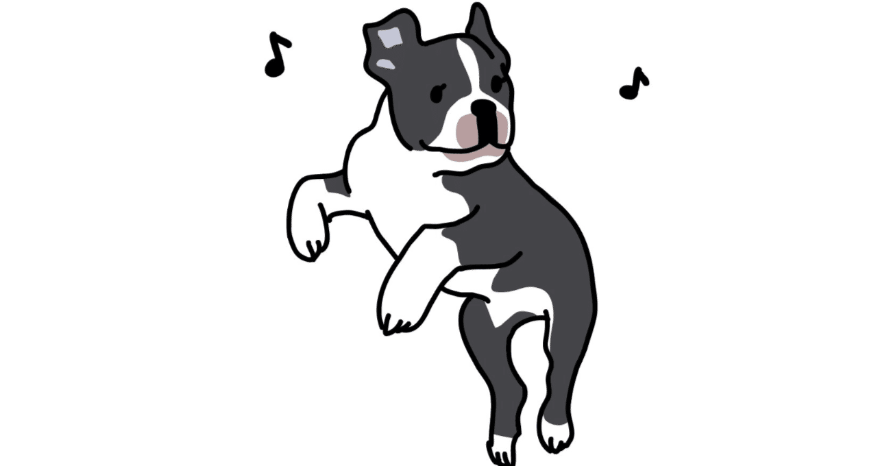

短い言葉のやり取りが苦手である。
友人同士でのLINEやX(旧Twitter)に代表される、短い言葉での表現が極端に苦手だ。
当時のTwitterも皆がこぞってアカウントを作り始めた頃から手を出してはいたものの、毎回140字の壁にぶち当たり、ついにはやめてしまった経緯もある。
でもLINE上で、特にグループLINEという空間では誰かと誰かのトークを見ることができる絶好の場所でもあるから、そこでプロテニスプレーヤーのボレーよろしく軽やかなトークをポンポンと繰り広げている様を目の当たりにすると、「ステキ！ 僕もこんな風になりたい！」と思ってしまうものなのだ。
「どんなに少なくても、1,000字はないと想いを表現できない！」
誰にも吐露したことはなかったが、これが僕の本音である。今のところ、誰にも賛同は得られていない。
そもそも、僕とスマートフォン上でトークをしてくれるなんて人は非常に数少ないのだが、ある時に旧知の人へ自分で読み返してみてもウンザリするほどの長文を送ったら、即座にこう返ってきた。
変態！ 文章変態！
なんて……！ なんて嬉しいことを言ってくれるのだ！
文章を書くことが癖になっている人間にとって、こんな褒め言葉ったらない。
「へっへっ……嬉しいよ( *´艸｀)」なんていうことを伝えてしまいたいくらいだったが、ますますその変態性が増してしまいそうなのでグッと抑えている。正体がバレるのは時間の問題だ。
ちなみに、ここnoteのプロフィール文も140字の制約がある。
現在設定している、「軽やかで隠れ家のようなnote」というフレーズは個人的には大変気に入っているのだが、この一文を考えるのに約3ヶ月も費やした。
いいのが思い浮かんでは消し……を何度繰り返したことか。頭の中では「キタコレ！」と感じても、実際に入力した文面を目にすると「やっぱり違ったorz」といった作業に実に3ヶ月も費やしたのだ！ ああ。なんて馬鹿馬鹿しい。
実はというと、設定こそしなかったものの、ほかにも候補があったので紹介したい。
「虚実入り混じる物語の世界へようこそ。海人です」
ダサい。やめて。ようこそしないで。
確かに、僕の書くものは本当のような嘘や、嘘のような本当が多分に含まれてはいるけれど、にしてもなんかやだ。生理的に受け付けない(さすがに言いすぎ)。
しかも、最後の「海人です」が後からじわじわきてしまう。お笑い芸人の「ヒロシです」のパロディか？ 君、笑わせにきてるのか、本気で言っているのか、ハッキリしなさい！
……もしかしたらすでにお気づきかもしれないが、僕は何事もある程度の長さがあれば饒舌に語れるのだが、少しでも字数や時間に制限があると途端にしどろもどろになってしまう軟弱さを兼ね備えているわけである。
別れ際、もう会えるか分からない好きな人を見送りに、新幹線のプラットホームへ。
「じ、じつは、ぼ、ぼくはきみにつたえたいことが、が……！」
プシュー。ドアの閉まる音が虚しく響き渡る。こんな有様ではいつまでも物語は進展しないし、新幹線も予定より早く動き出したいことだろう。
……おっと、いつにも増して下らないことを語っている間に数少ない知人からLINEが届いているではないか。
ふむふむ。なになに。うん、問題ないな。
「りょ！」(※「了解」を省略した若者言葉)
確かに短いフレーズではあるけれど……あらぬ方向へ舵を切った音が、すぐそこでした気がする。……海人です。